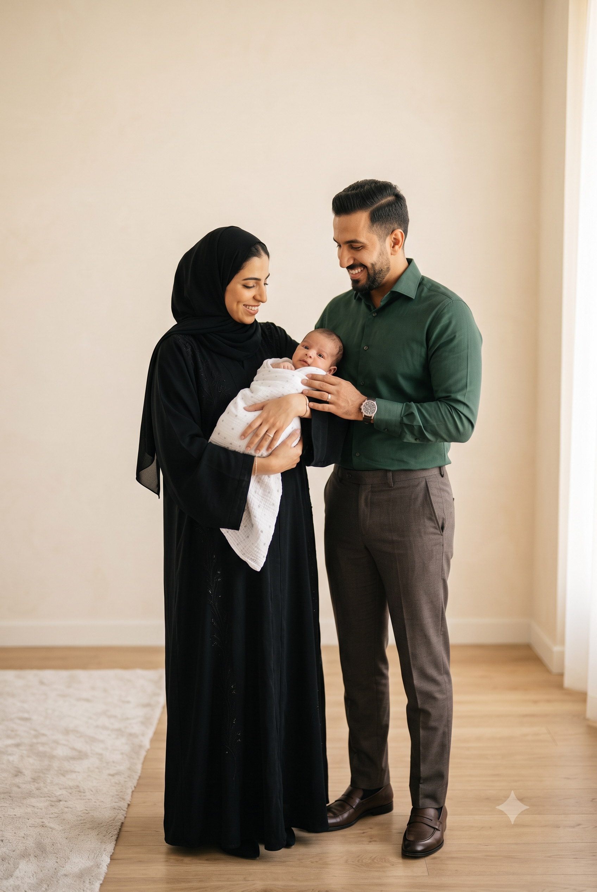

Your Family's Journey
Your Family's
Journey
What to expect — from the moment you book to the days after you're home.
Many families arrive with questions, a car seat, perhaps an older child's hand — and underneath it all, the quiet wish to do this right for their son. So let us walk you through every step, exactly as it will happen. By the time you arrive, nothing about the day will be unfamiliar.
The Journey
From the moment you book to the days after you're home.
Every detail considered for you and your family. Before, during, and after.
What's Included
01Before you book
Booking takes one message. From that first conversation, we're already thinking about your day — will a big brother or sister be joining us? Would you prefer English or Arabic? — so that everything is ready before you arrive. If the morning goes sideways, as mornings with a newborn do, rescheduling is simple and entirely guilt-free.
02Arrival
The valet meets you at the door. Inside, your children are welcomed as warmly as you are — there's a play area that belongs to them. You'll settle into the lounge: a coffee, a glass of water, a quiet corner. Most families are with us for around an hour, and not one minute of it feels hurried.
03With your surgeon
A nurse brings you through, checks your son's weight, and explains every detail of what happens next — nothing assumed, nothing skipped. Then you sit with your surgeon. You are warmly encouraged to stay beside your son throughout. Once the local anaesthetic has gently taken effect, the procedure itself takes about a minute — quick, precise, and never once rushed.
04Afterwards
Afterwards, a private room is yours. Your nurse settles you in, checks on him, and walks you through the aftercare, simply and clearly — the dressing, the discharge pack, every question answered. Feed him whenever he's ready; there's a dedicated feeding room too, should you want it. A calm, unhurried time to settle and feed — before heading home.
05Home, but never alone
Your discharge pack holds everything you'll need — and a few small extras from us. The same guidance reaches you three ways: printed, on WhatsApp, and by email, so it can never be lost.
We check in with you through the first days. On day four, you'll send us a few photographs, and your surgeon reviews them personally and writes back to you. Whenever something worries you, message us. We're never far away.

Before Your Visit
Your pre-visit guide lists the few things that matter.
Before the day, we confirm your son's preparation individually — including the timing of his last feed, which matters more than most parents are told. You'll have it all in writing, in English or Arabic.
If the timing isn't right — vaccinations, a nappy rash, an unsettled week — we'd far rather move the day. One message is enough. No charge, no explanation needed.
Directions are one click away on our Contact Us page. The valet takes care of the car.

On the Day
Door
to door.
The valet takes the car, and you're welcomed by name. The lounge and play area are yours until you're ready. A nurse checks your son's weight and talks you through every detail. Then you meet your surgeon — an unhurried conversation first, then the procedure itself, with you beside your son if you wish. It takes about a minute. Afterwards, a private room for feeding and quiet, the aftercare explained simply, and a pack that holds everything you'll need. The valet brings the car around, and you leave the way you came — together, and at ease.
The Days After
The care doesn't end at the door — in many ways it begins there.
Your guidance travels three ways
Your aftercare guidance travels three ways — printed, on WhatsApp, and by email — so it can never be lost.
Two things worth knowing early
The first evening can be harder, as the numbing wears off; it passes. From day three, keep the Vaseline generous — it matters more, not less.
What each day should look like
Bathing, swelling, every what's-normal question — is answered gently in our questions pages, and in more detail in the pack you take home.
Day four, and your surgeon's own eyes
On day four, you'll send us a few photographs. Your surgeon reviews them personally and writes back to you. Whenever you're worried, message us. Nothing is too small.
If he ever seems seriously unwell — hard to wake, struggling to breathe — call 998 first. Then call us.